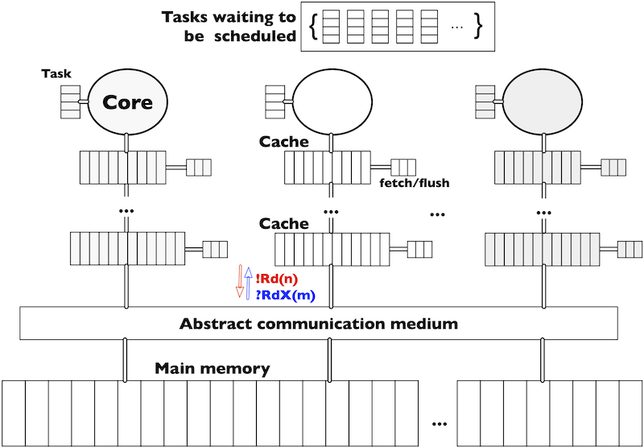
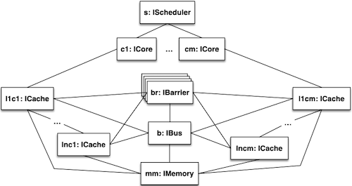

ABS model of a multicore memory system¶
This page presents a model of the MSI cache coherency protocol. The complete code can be found at https://github.com/abstools/absexamples/tree/master/collaboratory/case_studies/Multicore_Model/.
A multicore memory system consists of cores that contain tasks to be executed, the data layout in main memory (indicating where data is allocated), and a system architecture consisting of cores with private multi-level caches and shared memory (see Figure System memory architecture). Such a system is parametric in the number of cores, the number and size of caches, and the associativity and replacement policy. Data is organised in blocks that move between the caches and the main memory. For simplicity, we abstract from the data content of the memory blocks, assume that the size of cache lines and memory blocks in main memory coincide and transfer memory blocks from the caches of one core to the caches of another core via the main memory. As a consequence, the tasks executed in the cores are represented as data access patterns, abstracting from their computational content.

System memory architecture¶
Task execution on a core requires memory blocks to be transferred from
the main memory to the closest cache. Each cache has a pool of
instructions to move memory blocks among caches and between caches and
main memory. Memory blocks may exist in multiple copies in the memory
system. Consistency between different copies of a memory block is
ensured using the standard cache coherence protocol MSI, with which a cache
line can be either modified, shared or invalid. A modified cache line
has the most recent value of the memory block, therefore all other
copies are invalid (including the one in main memory). A shared cache
line indicates that all copies of the block are consistent. The
protocol’s messages are broadcast to the cores. Following standard
nomenclature, Rd messages request read access and RdX messages
read exclusive access to a memory block. The latter invalidates other
copies of the same block in other caches to provide write access.

ABS model structure¶
This use-case contains a distributed implementation of this model in ABS (see Figure ABS model structure). A transition system specification of this model can be found at https://doi.org/10.1016/j.scico.2019.04.003.
We have two versions of the model which can run with different initial configurations:
withoutPenaltiesSimplified: no collection of penaltieswithPenaltiesSimplified: collection of hits and penalties. Hits count the number of times a memory block was found in the caches. Penalties vary (from 1,10, 100, etc.) depending from where in the memory system the memory block was accessed. The further down the data is accessed in the memory system, the higher the penalty.
Model configurations¶
All the configurations have 4 cores with three levels of caches, but they are varying in the number, size and access patterns of the tasks.
- Config1
Contains 10 tasks with 100 read/write instructions each. It has one access per memory block, where all the tasks do not share any block during execution.
- Config2
Contains 10 tasks with 100 read/write instructions each. Tasks interleaves between a read and a write with one access per memory block. Each task shares with the next task 1/4 of its blocks.
- Config3
Contains 10 tasks with 100 read/write instructions each. Task interleaves between a read and a write to the same memory block, therefore each task has two accesses read/write per memory block. All the tasks do not share any block between them during execution.
- Config4
Contains 10 identical tasks with a loop accessing one memory block many times. Since all the cores access a single memory block many times, the execution generates congestion.
Running the simulation with penalties¶
absc --erlang common/*.abs withPenalties/*.abs configs/ConfigX.abs
./gen/erl/run
Where X correspond to which initial configuration is chosen.
Example output of running Config4:
C1: hits = 10; penalties = 120
C2: hits = 10; penalties = 1220
C3: hits = 10; penalties = 2210
C4: hits = 10; penalties = 3090
Running the simulation without penalties¶
absc --erlang common/*.abs withoutPenalties/*.abs configs/ConfigX.abs
./gen/erl/run
Example output of running Config1:
Execution has terminated